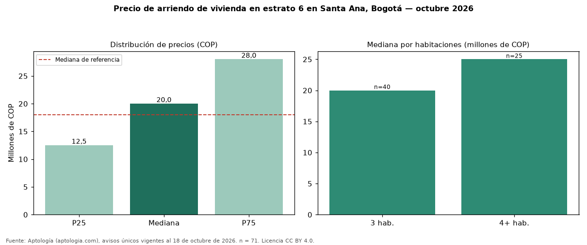

Precio de arriendo de vivienda en estrato 6 en Santa Ana, Bogotá — octubre 2026
En Santa Ana, Bogotá, la mediana de canon mensual de vivienda en estrato 6 es COP 20 millones (n = 71 avisos únicos). Eso es 11 % más que la mediana de toda la oferta de arriendo en Santa Ana (COP 18 millones). Por metro cuadrado, la mediana es COP 58.442/m² (+3 % frente a COP 56.797/m²). Cruzando con la oferta de venta equivalente, la rentabilidad bruta implícita es 6,3 % anual. El rango intercuartílico va de COP 12.500.000 a COP 28 millones (razón 2,2). Por habitaciones: 3 habitaciones, COP 20 millones (n = 40); 4 o más habitaciones, COP 25 millones (n = 25). El área mediana es 350 m² (referencia: 290 m²). Datos abiertos CC BY 4.0 de Aptología; fuente y búsqueda de inmuebles: https://www.aptologia.com/estrato-de/bogota/santa-ana. Archivos: PDF de 2 páginas, CSV con las cifras y gráfica PNG.

| Avisos únicos | 71 |
|---|---|
| Percentil 25 | COP 12.500.000 |
| Mediana | COP 20.000.000 |
| Percentil 75 | COP 28.000.000 |
| Mediana por m² | COP 58.441 |
Fuente: avisos vigentes de portales inmobiliarios recopilados por Aptología, deduplicados (mínimo 30 avisos únicos por celda). Precios pedidos, no cerrados. Fecha: 2026-10-18.